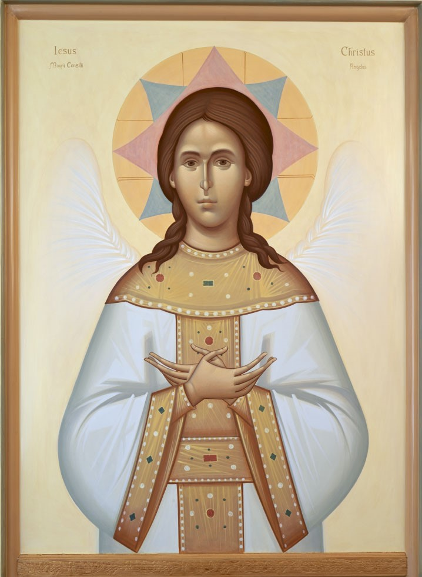

Le logo du Centre : Reprise du portail de la Cathédrale de Fribourg, l’image centrale nous évoque le Christ Incarné, Crucifié, Ressuscité et Exalté. Le pont symbolise notre travail, à savoir la construction des liens entre l’Orient et l’Occident. La main de bénédiction représente le reliquaire de Saint Nicolas qui se trouve dans la cathédrale de Fribourg. Signe de nos séries de publications Epiphania, l’étoile indique le chemin vers la crèche du Christ et accompagne de sa lumière la proclamation de la philanthropie de Dieu. Décernée au Centre d’études pour les activités œcuméniques, la Rose d’argent de Saint-Nicolas fait référence à la beauté et à la gloire de Dieu.
Contextualisation
Fondée en 1889, à l’initiative de Georges Python, avocat, l’Université de Fribourg abrite l’une des plus grandes Facultés de théologie en Suisse. Un catholicisme ouvert au monde caractérise l’enseignement théologique fribourgeois et lui donne une réputation et une reconnaissance internationale qui se repend très loin, même en Orient. Le nombre croissant d’étudiant-e-s orthodoxes ou de traditions orientales, en plus des étudiants-e-s de traditions réformées, évangéliques ou provenant des églises libres, montre l’esprit œcuménique de l’enseignement et témoigne de l’enrichissement créé par le brassage des expériences. Pour rendre plus visibles les initiatives par rapport à la tradition orientale et pour créer un cadre institutionnel à la coopération avec les Églises d’Orient, le centre d’études voit le jour le 6 décembre 2017, lors de la fête de Saint-Nicolas. Affilié à l’Institut d’études œcuméniques (ISO) qui existe depuis 1964, le centre offre une plateforme académique dans le cadre de la théologie catholique afin que les théologiennes et les théologiens orthodoxes puissent connaître l’Église et la théologie de l’Occident à partir de leur propre expérience. Vu qu’il s’agit d’un centre d’études, les chercheurs sont invités à développer une théologie créative et à devenir des acteurs et des actrices autonomes dans le dialogue entre l’Orient et l’Occident.

Atelier iconographique, Fribourg, Photo: Stefan Constantinescu

Journée des portes ouvertes de l’UniFr, Photo: Stefan Constantinescu
Portail vers l’Orient
Le siège principal du Centre se trouve dans le bureau 6115 du bâtiment Miséricorde de l’Université de Fribourg. Cet espace abrite – en plus de la précieuse bibliothèque privée du théologien et hagiographe réformé Walter Nigg (1903-1988) – une riche documentation théologique orthodoxe et offre la possibilité aux chercheurs d’échanger leurs résultats de recherche dans un espace académique convivial. Il s’agit d’un laboratoire en miniature qui rassemble des collaborateurs et collaboratrices venu-e-s de tous les horizons et dont les profils orthodoxes ou confessionnels sont très variés. Le programme de recherche est largement façonné par la directrice du Centre, Mme Prof. Dr. Barbara Hallensleben, professeure de théologie dogmatique et de théologie de l’œcuménisme. L’offre de formation est notamment constituée, en outre, du cours principal «Églises orientales et théologie orthodoxe». En outre des projets de recherche sont actuellement en route au sein du Centre: 1) Sergij Bulgakov et la sophiologie, 2) Giorgio Agamben et sa relecture politico-philosophique de la tradition théologique, 3) Les Églises sœurs, 4) La Synodalité, 5) Le Concile de Florence et les «unions d’Églises», 6) La mission en perspective orthodoxe, 7) L’esthétique et l’iconographie. Tous ces sujets ne s’inscrivent pas uniquement dans une perspective de théologie orthodoxe, mais sont des sujets d’importance pour mieux comprendre les développements occidentaux dans leurs spécificités et leurs limites. En tant que lieu d'étude et de rencontre, un nombre important d’étudiant-e-s, de doctorant-e-s, d’enseignant-e-s et de représentant-e-s des églises orthodoxes sont présent-e-s à la Faculté de théologie ou collaborent avec le Centre. La vision œcuménique n’est pas seulement visible sur le plan théologique et scientifique, mais aussi expérimentée et vécue très concrètement dans le cadre de la vie quotidienne estudiantine. L’Association Saint Nicolas des étudiant-e-s orthodoxes à l’Université de Fribourg, présidée par M. Stefan Constantinescu, aussi co-directeur du Centre, fournit une plateforme aux étudiant-e-s orthodoxes et de traditions orientales afin de les aider à s’intégrer dans le milieu universitaire fribourgeois. L’Association est ouverte également aux étudiant-e-s catholiques, protestants et à toute personne qui s’intéressent à la culture orientale. Parmi les activités proposées, il convient de mentionner un programme de prières tous les lundis, à 12h15 à la chapelle orthodoxe du Salesianum (Foyer d’étudiants) et la célébration de liturgies. D’autres activités sont mises en place, comme des ateliers de chants liturgiques, d’iconographie et même de jeux pour les enfants, à l’occasion de la journée des portes ouvertes de l’Université de Fribourg ou de la journée des familles pendant la fête de Saint Nicolas organisée par la ville de Fribourg. L’Association regroupe actuellement une vingtaine de membres issus de différents pays comme la Roumanie, la Moldavie, l’Ukraine, la Grèce, le Cameroun, l’Allemagne et la Belgique. Beaucoup étudient la théologie, d’autres la philosophie, la philologie classique, la médecine ou sont inscrits au Conservatoire de Fribourg. L’Association entend s’adresser aux étudiants provenant de l’ensemble du monde orthodoxe, qui comprend les patriarcats anciens et récents, mais aussi les Églises éthiopienne, érythréenne, copte, arménienne, syrienne, voire indienne.
Après la liturgie célébrée dans la chapelle, Photo: Stefan Constantinescu
Lieu de transformation : la chapelle orthodoxe
Grâce à l’hospitalité œcuménique de la communauté du «Chemin Neuf» qui assure la gestion du Convict Salesianum (Av. de Moléson 21, 1700, Fribourg), une ancienne salle de ping-pong a été transformée en chapelle orthodoxe et abrite une iconostase orthodoxe (cloison de bois ou de pierre, recouverte d’icônes et de bougies. Elle sépare la nef du sanctuaire où se tient le clergé célébrant la liturgie eucharistique). Notre iconostase est le fruit de la collaboration avec l’iconographe roumain Gabriel Solomon, étudiant à Cluj et peintre certifié. Les représentations de l'iconostase forment une synthèse surprenante de la tradition occidentale et orientale. Des témoins de la foi tels que Dietrich Bonhoeffer et Oscar Romero sont représentés à côté de figures bibliques et de pères de l'Église. Tout en conservant la structure traditionnelle, la nouveauté de l'œuvre iconographique est particulièrement évidente dans la représentation de Jésus-Christ comme un jeune homme imberbe. Cette rare représentation orthodoxe s'écarte de la représentation traditionnelle de Jésus où on le voit plutôt avec un visage sévère en tant que «Pantokrator». Dans cette icône, le Christ porte des vêtements sacerdotaux et il a des ailes pour symboliser la perfection de sa nature humaine. En Occident, Jésus est appelé «angelus boni consilii» (l’ange du bon conseil). De plus, l'iconographe souligne la mission de Jésus en tant que témoin de la vérité de Dieu. Cette représentation invite à entrer dans le silence de la rencontre face à Face du Logos incarné en tant que source de toute parole. Somme toute, la voie de l’expression artistique de l'iconostase est un moyen de saisir le sens théologique de l'Incarnation. Devant l'icône, le langage humain se transforme en silence et devient une figure du désœuvrement. Ainsi, il est à nouveau en mesure de témoigner la Parole divine. Cette contemplation est la source d'où émerge également la forme la plus élevée de la théologie.
Icône de Jésus Christ

Icône de Maria Ecclesia Sophia (détail sur l’iconostase)
Stefan Constantinescu est Assistent du Département des Sciences de la foi et des religions et Philosophie et aussi co-directeur du Centre d’études des Églises d’Orient à l’Université de Fribourg
Weitere Artikel von {{author.author}} finden Sie hier:
Pour aller plus loin:
- www.unifr.ch/orthodoxia
- Barbara Hallensleben / Stefan Constantinescu, „Ikonen als Zugang zum Göttlichen“, in: Schweizerische Kirchenzeitung 187 (2019), Nr. 23, S. 479.
- Barbara Hallensleben,Interview in: Foi, revue de la communauté «Chemin neuf», Nr. 58, September – Oktober - November 2018, S. 19.
- Stefan Constantinescu, Interview in: Schweizerische Kirchenzeitung 186 (2018), Nr. 19, S. 404-405.
- Stefan Constantinescu,Interview in: Alma&Georges, Das Online-Magazin der Universität Freiburg (30.10.2018).